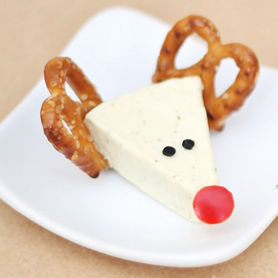

Les ingrédients
- 6 portions de Vache qui rit
- 6 tomates-cerise
- 12 bretzels
- 12 grains de poivre
La recette
- Commence par déballer la portion de Vache de rit. Place-la ensuite dans une petite assiette.
- Fais les oreilles du petit renne de Noël en ajoutant un bretzel sur les deux pointes du haut.
- Fais maintenant le nez rouge en plaçant une demi tomate-cerise sur la pointe du bas.
- Ajoute enfin deux petits grains de poivre pour faire les yeux noirs. Ton petit renne de Noël est prêt ! Bon appétit !